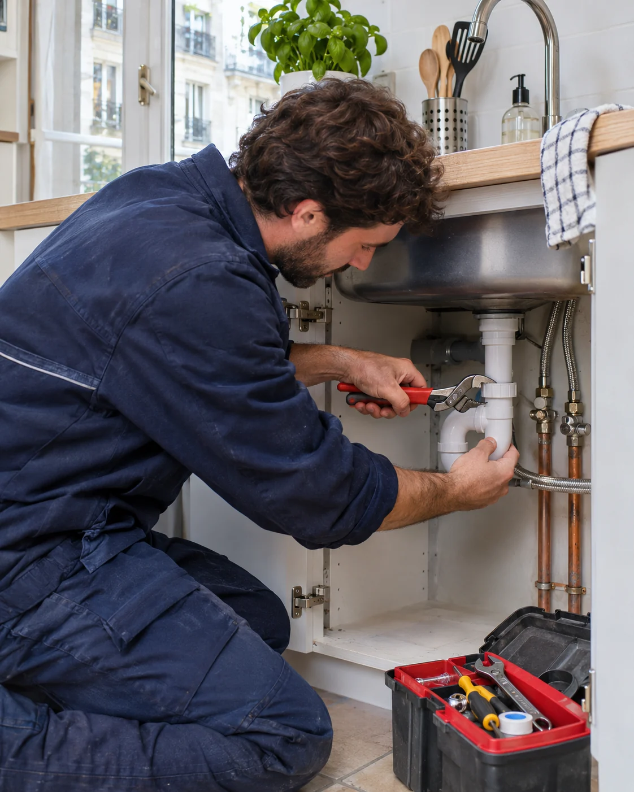
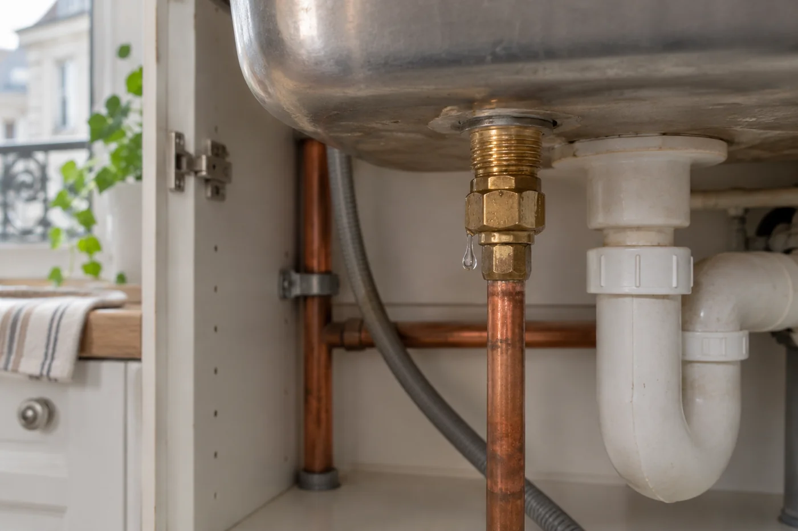
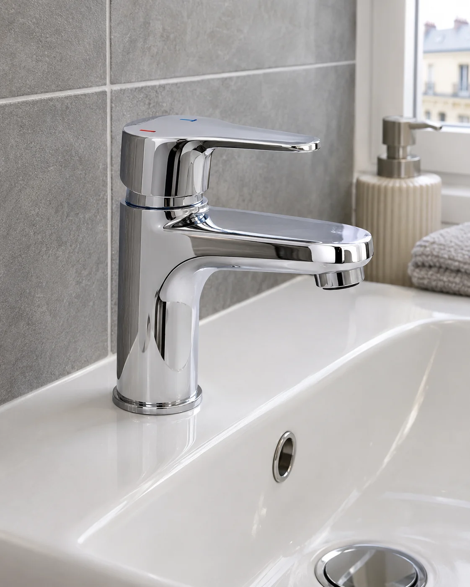
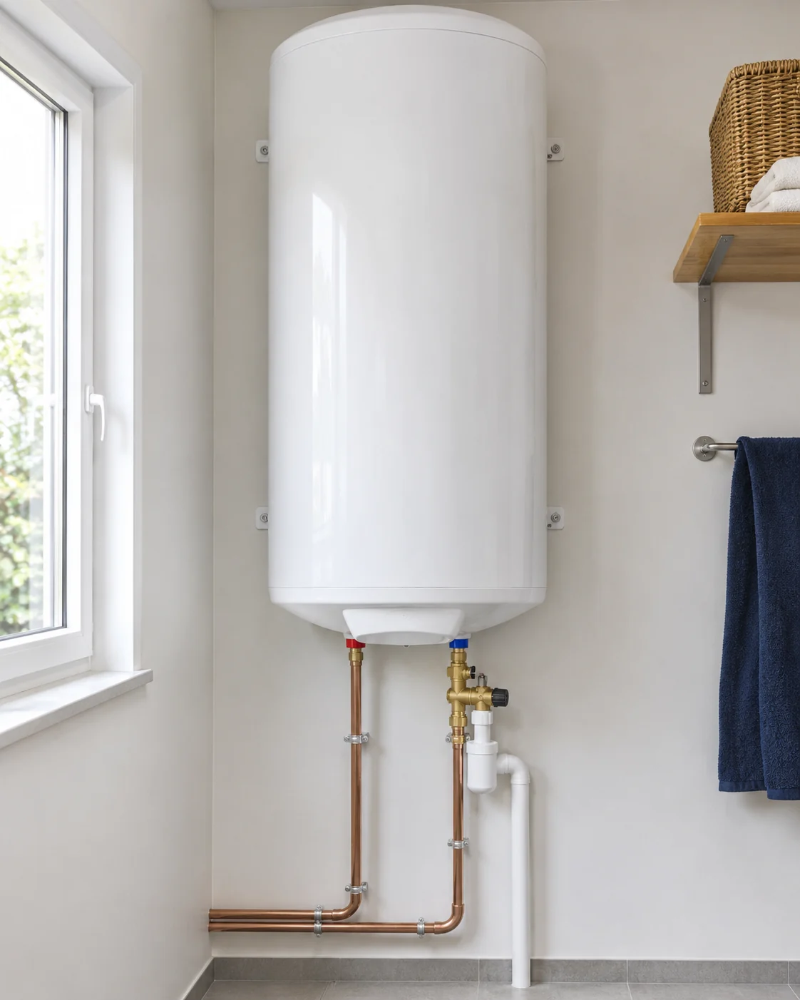
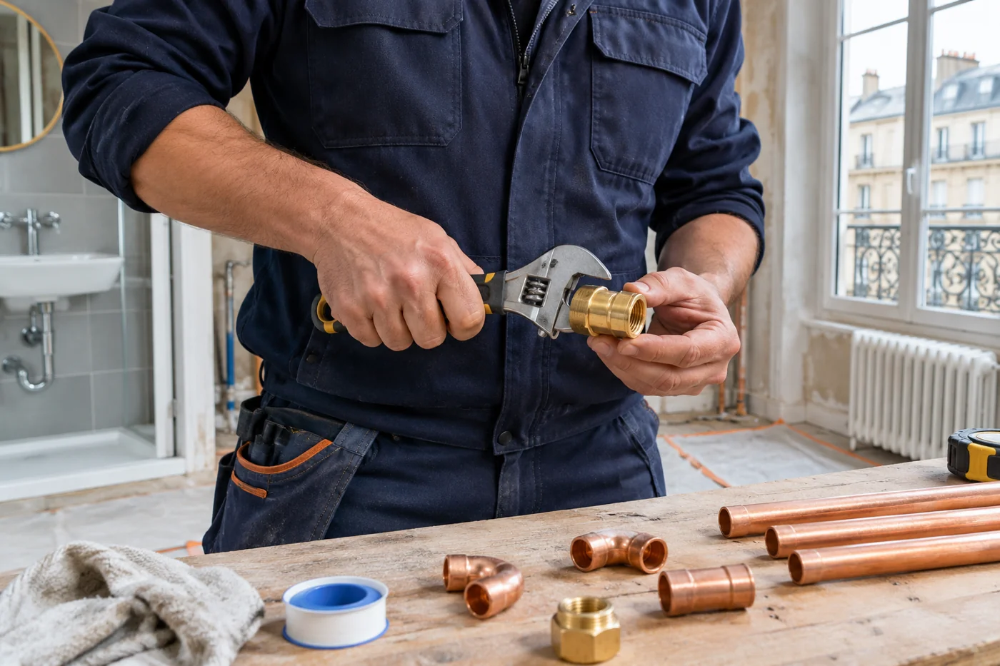

PLOMBERIE · PARIS ET BANLIEUE
ASF Plomberie,
votre plombier à Paris
et en banlieue
Nous assurons le dépannage, la réparation et l’installation de vos équipements de plomberie.

Le sens du service.
NOS SAVOIR-FAIRE
À chaque besoin,
la bonne intervention.
De la réparation d’une fuite à l’installation d’un sanitaire, nous vous accompagnons dans vos travaux de plomberie à Paris et en banlieue.

Dépannage plomberie ↗
Fuites, canalisations bouchées et problèmes d’évacuation.

Robinetterie et sanitaires ↗
Robinets, WC, lavabos et éviers : réparer ou remplacer.

Chauffe-eau ↗
Dépannage et remplacement de ballons d’eau chaude et cumulus.

Visuel d’illustrationASF PLOMBERIE
Votre quotidien mérite
toute notre attention.
Nous vous accompagnons pour vos travaux de plomberie à Paris et en banlieue, du dépannage d’un équipement à son remplacement. Nous échangeons d’abord sur les symptômes, l’installation existante et vos contraintes d’accès pour préparer une intervention adaptée.
- Une demande expliquée simplement
- Des équipements et contraintes pris en compte
- Une intervention organisée avec vous
PARTONS DE VOTRE BESOIN
Quel problème rencontrez-vous ?
COMMENT ÇA SE PASSE
Un premier échange.
Une suite organisée ensemble.
Décrivez votre besoin
Appelez-nous ou préparez votre demande en précisant le problème et votre localisation.
Échangeons ensemble
Nous faisons le point sur l’équipement concerné et les informations utiles.
Organisons l’intervention
Nous convenons de la suite selon votre situation et nos disponibilités.
PROCHE DE VOS BESOINS
Paris et banlieue.
Nous intervenons sur cette zone. Indiquez-nous votre localisation pour confirmer la possibilité d’un déplacement et organiser la suite.
Nous parler de votre situation ↗PARLONS DE VOTRE BESOIN
Un projet, une fuite,
une question ?
Nous prenons le temps d’échanger sur votre situation.